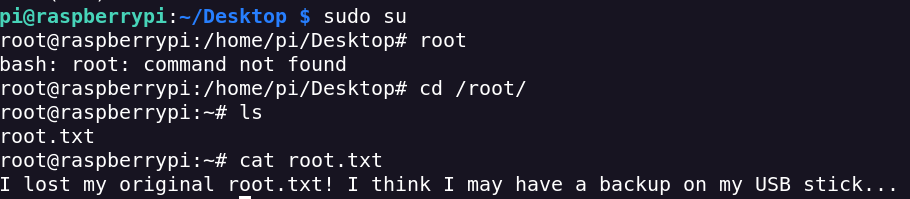

Portscan
nmap -sVC -p- --open -sS --min-rate 5000 -v -n --stats-every=5s -Pn -oN mirai_scan <IP>
Services Discovered:
22 ssh OpenSSH 6.7p1 Debian 5+deb8u3 (protocol 2.0)
53 domain dnsmasq 2.76
80 http lighttpd 1.4.35
1456 upnp Platinum UPnP 1.0.5.13
32400 http Plex Media Server httpd
32469 upnp Platinum UPnP 1.0.5.13
In 32400 port I find a login page for Plex.
I will start with this login. I try to create a new acc for register, but i receive this advertice
I don't find anything interesting on port 80
it returns a blank page
I analyze the answer it gives me with Burpsuite
I see that the response give me X-Pi-Hole
The Pi-hole® is a DNS sinkhole that protects your devices from unwanted content without installing any client-side software
Default route to admin dashboard is admin
I search the default creds and i use them
pi:raspberry
I recycle the same creds in SSH and i receive the shell for user
I make sudo -l to see what i can execute as a root

Hmm interesting
I check the devices connected with lsblk
The route of the usb is /media/usbstick
I access to the usbstick and there is a important archieve
Forensic time :/
I have to create a image of the Usbstick with dcfldd, a tool for for copying and converting files
dcfldd if=/dev/sdb of=/tmp/usb.dd hash=md5,sha1 hashlog=/tmp/hashlog.txt
Compare the hashes
dcfldd if=/dev/sdb vf=/tmp/usb.dd verifylog=/tmp/verifylog.txt
Send the image to my machine to apply forensic tools (Exfiltration)
I will do fls to list the files and directories in the file image
I can see the root.txt flag
I try the strings command. This show me the sequences of printable chars from a file.